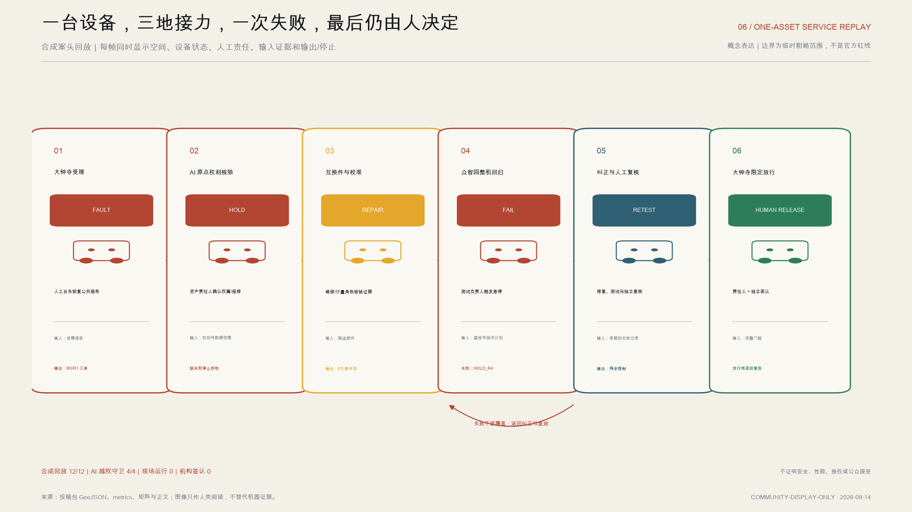
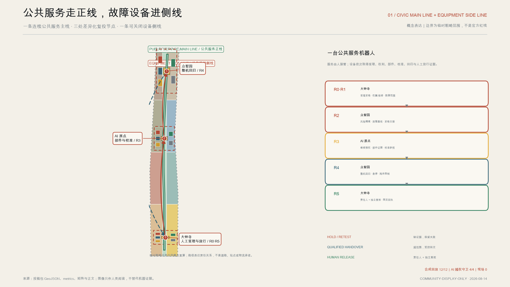
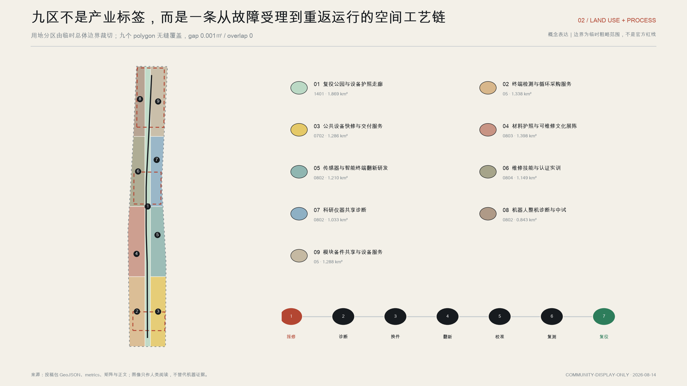
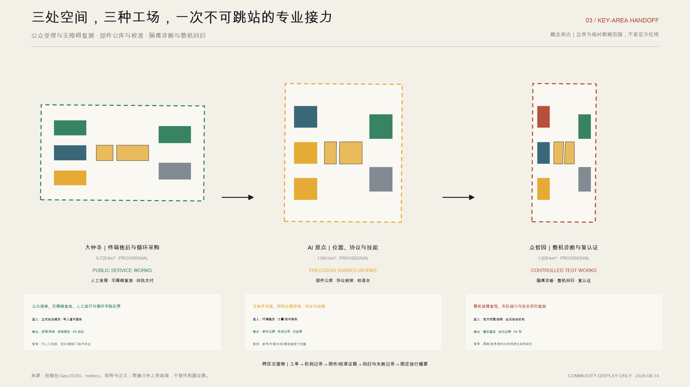
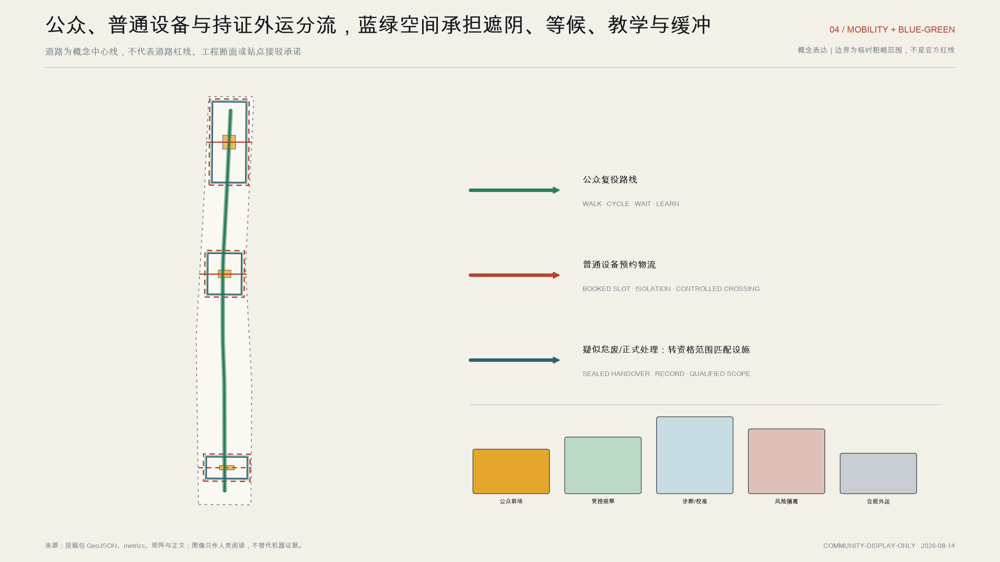
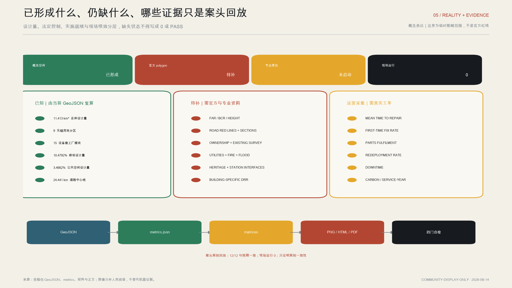

京张复役厂：城市 AI 设备的换件、再制造与重返运行基础设施
以京张铁路养护文化为线索，把连续开放的公共服务正线、可关闭的设备复役侧线与三处差异化工场组织成城市 AI 设备的复役工业底座。AI 只做检索、聚类、测试编排和证据缺口检查；保修、风险分类、兼容确认、专业签认与最终人工放行由有责任的人承担。所有空间和指标依托临时几何，不被写成法定规划或已获批准的工程。
京张复役厂：城市 AI 设备的换件、再制造与重返运行基础设施
90 秒读懂一台设备如何复役
一台公共服务机器人故障后，首先在大钟寺人工前台受理，公共服务同步切换到工作人员或等价非数字路径；随后它不是直接进入“维修成功”的叙事，而要依次通过 R0 受理资格、R1 权属/保修/数据权限、R2 风险隔离与诊断基线、R3 维修授权与部件证据、R4 校准与回归复测、R5 人工放行与去向。任何一道门缺证据，设备进入公开的 HOLD、退回或资格匹配的外部交接，而不是被下一环节默认接收。
三处重点区由此形成一条接力：大钟寺接住报修、连续服务和最终回执；北京 AI 原点社区补齐互换件、仪器校准和数据权利证据；众智园完成整机故障复现、车队接口和安全回归复测。只有完整门链、数据擦除状态、残余限制、责任人与独立复核共同闭合，设备才可获得限定范围的复役回执；这份回执不是产品认证或行政许可。指标 指标
AI 在这段旅程中不是“电子责任人”。它可以归类故障、检索相似工单、生成候选部件、编排已经批准的测试、提示异常和检查证据缺口；它不得裁定保修、危险废物属性、部件兼容、安全、无障碍接受或最终复役。任何 AI 越权请求必须被系统拒绝或转为 HOLD，再交给有责任的人处理。指标 标准
v1.2 已用 12 个完全合成的负分支回放检查上述规则，12/12 决定与预期一致。其中 8 个检查 R0—R5，另 4 个专门检查 AI 越权：超范围个人数据、无证据部件推荐、AI 自行放行和缺少责任签认。该结果只证明投稿内规则可重复执行，现场运行仍为 0，机构、场地、预算和专业签认均未确认。指标 指标 深度

设计依据与资料清单
“京张复役厂 / JING-ZHANG RETURN-TO-SERVICE WORKS”回答一个常被智慧城市叙事省略的问题：机器人、传感器、边缘算力柜、智能终端和公共交互设施投入使用后，谁来报修，谁承担保修，部件能否跨供应商互换，数据怎样擦除，翻新设备如何重新校准并被允许重返运行。方案不把“修补城市”泛化为修理一切，也不把共修活动当成完整产业链；它聚焦城市 AI 设备，从故障受理到再部署建立可审计的空间、工单和责任基础设施。这一命题从赛事公告关于 AI 产业、城市更新、公共空间和三处重点区的任务出发，并接受智能体任务书对品牌、场景、地标和长期运营的完整要求。来源 来源
设计的本地依据包括场地包、允许设计空间、来源登记表、专业标准本地快照、临时总体边界和三处临时重点区。来源登记决定资料的使用等级：可正式使用的材料支持任务解释和专业方法；背景材料只支持问题识别；临时几何只用于概念制图、面积复算和投稿自检。当前总体边界并非官方红线，三处重点区也没有经过官方坐标锚定；尤其 PROV-KEY-003 只按南北顺序与面积被临时配置，不能自行平移到大钟寺站点。方案保持上游临时几何原位，并把其精度限制传播到所有面积、图面和分期结论。来源 来源 来源
外部研究只承担“方法参照”而不替代中国本地审批。欧盟维修促进规则提供维修义务、信息和服务平台的制度比较；法国可维修性与耐久性指数提示评分应拆成文档、拆解、备件、可靠性等可解释维度；欧盟生态设计与数字产品护照规则提示资产身份和生命周期记录可以被机器读取。全球电子废物监测材料说明设备寿命和回收之间存在显著系统缺口，但其全球统计不能充当北京或本项目基线。来源 来源 来源
产业工艺参照来自循环指标、再制造流程、移动机器人互操作接口和社区维修数据。它们分别帮助本方案定义材料循环口径、核心件回收—拆解—清洁—检测—修复—复测链条、跨厂商车队接口测试以及标准化维修工单；企业自述、国际行业接口和社区样本均不被表述为京张绩效或法定标准。来源 来源 来源
中国法规边界决定后台能做什么：场内概念功能限定为诊断、维修、校准、低风险模块更换、清洁翻新、组装和合格品复测。疑似危险废物、电池损伤件，以及属于目录内废弃电器电子产品的正式拆解与处理，必须转交许可或处理资格范围匹配的设施，并保留交接、转移和数据擦除记录。法规的适用对象按产品目录和废物属性判断，不能因为设备带有 AI 就推定其全部属于同一种电子废物类别。来源 来源 来源
完整来源权利、转换、限制和访问日期进入 sources.json；几何、指标、任务、标准与设计深度分别由对应结构化文件承担。本正文只在判断旁放置直接证据。所有图件由同一组 GeoJSON 和指标派生，边界以低对比虚线出现，避免把临时矩形或粗略多边形误读为正式规划控制线。深度

三层范围工作框架
三层工作框架不是三个互不相干的比例尺，而是一条从区域产业问题到设备工位的责任链。第一层“统筹研究范围”观察京张沿线 AI 企业、高校、公共部门、社区和设备运营者之间的服务缺口，提出复役产业的共同协议和品牌；该层不据临时边界计算法定总量。第二层“总体设计范围”使用 SITE-001 临时边界组织九个无缝用地分区、复役公共脊、绿地、公共空间、建筑基底和三期实施图层。其投影复算面积为 11,412,825.386 平方米，只代表当前提交几何，不代表官方红线面积。空间数据 指标
第三层是三处重点区域：众智园 AI 自主创新加速区、北京 AI 原点社区和大钟寺 AI 产业聚集区。当前临时多边形复算面积分别为 1,929,201.877、1,043,236.909 和 720,454.219 平方米，总计 3,692,893.005 平方米。它们用于把“整机复役—仪器复役—终端复役”三类产业任务分配到空间，并在每区配置机器人与移动设备、科研与检测仪器、边缘 AI 与传感终端、公共服务设备、共享部件与备件五种模块，共十五个概念微工厂。面积与位置均为低置信度临时计算，不构成宗地、征拆或站城一体化边界。空间数据 指标 指标
三层之间以“问题—协议—工位”传递成果。区域层确定跨供应商互换件目录、资产护照字段、复认证责任和持证外运接口；总体层把这些制度转成前台、中台、后台和物流路径；重点区层再转成可观察的受理柜台、诊断工位、备件库、校准室、教学空间与公共问诊前场。这样，产业策略不会停留在地图上的产业标签，单个工位也不会脱离城市治理和供应链条件。深度 标准
工作深度按资料可信度分级。临时几何可以支持图层拓扑、相对结构、设计量和概念分期；官方红线、控规、权属、现状测绘、道路红线、地下管线、消防、防洪、文保和运营主体未齐全时，不支持精确容积率、高度、建筑密度、拆改留、投资估算或工程可行性结论。收到官方总体及重点区 polygon 后，应保持设备功能逻辑不变，重新裁切九个用地分区，重算十五个模块、七条中心线、四处绿地、四处公共空间和三期覆盖，并同步再生成指标、PNG、HTML 与 PDF。深度
三层成果的共同停止条件是“可以追溯但不能越权”：每一项空间建议要能回到图层，每一个已知指标要能回到公式，每一个未知法定条件要有补数触发器，每一项 AI 场景要有人工接管和运营责任。当正式数据与概念冲突时，以正式资料和专业团队复核为准，而不是维护当前图形的形式完整。

统筹研究范围产业与未来城市研究
京张 AI 创新带需要的不只是更多新品发布空间，还需要设备进入城市之后的“服务年基础设施”。本方案提出三大定位：一是城市 AI 资产售后与保修的公共接口，让居民、物业和运营单位知道向谁报告问题；二是跨供应商换件、再制造与复认证的产业协作带，让小企业不必各自囤积全部备件和测试设备；三是可维修采购与循环绩效的治理试验场，让故障、修复和再部署数据反向影响采购。五项功能依次为公共问诊、设备诊断、共享备件、再制造复测、人才认证；它们由三处重点区和复役公共脊连接，而不是由一个巨型封闭园区包办。来源 深度
官方任务把三处重点区分别指向全栈自主创新与 AI 治理、世界级创新生态、智能原生新业态；本方案据此推导复役分工，而不是从临时矩形的形状倒推功能。众智园承担整机故障复现、接口与安全回归；AI 原点承担互换件、仪器校准、开源方法和技能；大钟寺承担城市终端受理、无障碍复测、人工放行与采购反馈。它们共同把“百年京张文化带—都市 AI 生活体验带—AI 融合创新带”变成从养护记忆、公众连续服务到受控产业验证的一条空间链。来源 来源
品牌名称“京张复役厂”中的“厂”不是复古造景，而是强调持续生产服务能力；“复役”比“维修”多出重新校准、责任确认和回到城市运行现场三步。标识采用两条平行铁路轨道在中部形成开口扳手，末端接一枚绿色复役签章；铁黑表示工业底座，工程纸白表示记录透明，氧化红标记故障，检修黄标记待处理，复役绿只用于通过复测的设备。导视语言把“报修—隔离—诊断—换件—复测—重返运行”写成人人看得懂的动词，不使用紫色 AI 渐变，也不复制铁路、企业或国际组织商标。
全球案例被转译为八个有限、可操作的部件。第一，欧盟维修促进规则启发统一维修服务入口和责任可见性，但不移植法律义务。第二，法国可维修性与耐久性指数启发“城市 AI 资产可维修性等级”，评分公开文档、拆卸、备件、工具、软件支持和可靠性维度，但它只是京张采购与运营试验指标。第三，数字产品护照启发设备护照和部件履历，不声称所有设备已经被法规强制覆盖。第四，全球电子废物监测提示延寿和正规回收需要同一条数据链，但全球 2022 年 62 Mt、22.3% 正式记录收集回收率等统计只用于问题背景。来源 来源 来源
第五，循环转型指标提示同时记录材料流入、流出和服务年，而不只统计回收重量。第六，再制造企业流程启发“核心件返回—拆解—清洁—检测—修复—复测”的工艺门，但质量、成本和减碳效益必须由京张试点实测。第七，VDA 5050 的开放接口案例启发跨厂商机器人进入共同测试场时使用可检查的互操作协议；它本身不是维修、安全或认证标准。第八，RepairMonitor 的标准工单启发公众共修数据结构，而其 2024 年 37,000 余次记录和 62% 成功率不被用作项目目标。来源 来源 来源
“三区两翼”落实为三处复役组团与两个横向接口：中关村科技服务翼提供知识产权、法务、资本、人才与国际转化服务，小月河场景赋能翼提供日常公共问题、无障碍体验和真实使用反馈。两翼不是新增法定边界或已确定合作通道；三组团共享互换件目录、备件库存和校准记录，以资产护照贯通设备的制造商、版本、维修、数据擦除、复测和去向。
更大区域协同采用“待核实能力接口”，不写成已经合作的资源地图：北纬社区输入包容性服务问题，京张输出人工等价服务清单；未来科学城输入工程与能源验证命题，众智园输出受控测试任务书；怀柔科学城输入科研成果和仪器方法，AI 原点输出可追溯的研究到原型记录；北京经开区输入制造与供应链经验，大钟寺输出可规模化前的故障与售后回执；京津冀接口只共享经授权的测试方法、培训和退出模板。建议年度核验问题关闭率、受控试验数、故障回传周期和迁移限制完整率，不建立无授权跨域数据池，也不声称机构已经承诺参与。来源 深度
未来城市假设因此从“设备越多越智能”转为“设备可被维护、停机可被解释、故障可被人工接管”。关键运营指标包括平均修复时间、首次修复成功率、备件满足率、再部署率、停机时间、材料回收率和单位服务年碳排；本方案只定义口径、采集点和责任，不虚构基线或承诺值。产业价值来自减少重复库存、延长服务年、形成可验证技能和让采购者看见全生命周期成本，具体经济与碳效益须由后续真实工单、能耗和材料数据验证。
总体设计范围城市更新与控规深度城市设计
总体空间结构为“一脊、三厂、九区、双回路”。一脊是 ROAD-001 复役公共脊，承担公众慢行、设备护照展示和三个问诊前场的联系；三厂是众智园整机复役、AI 原点仪器复役和大钟寺终端复役组团；九区覆盖从复役公园、终端检测、公共设备快修、维修文化展陈，到传感器翻新研发、技能认证、科研仪器诊断、机器人整机中试和共享备件服务的完整用地逻辑。双回路分别是公众可进入的服务回路与设备受控物流回路，避免居民参观动线和待隔离设备混行。空间数据 空间数据 深度
用地不是按单一企业切割，而是按复役流程和风险等级组织。公开受理、文化展陈、技能教育贴近公共脊；诊断、低风险换件和校准位于可视但可控的中间层；需要噪声、洁净、吊装或严格权限的工位退入后台；危废、电池损伤件及目录内正式电子废物处理不在场内构成完整拆解产线，而由受控外运接口转至资格范围匹配的设施。九个 polygon 无缝覆盖当前提交边界，计算缝隙仅 0.001 平方米、重叠为零，这是数字拓扑质量，不是对现状土地权属的判断。指标 指标
城市更新采取“先服务、后空间；先可逆、后重资产”。近期优先在可合法使用的既有空间嵌入受理台、共享工具、移动诊断车、校准台和备件数字目录，以真实工单检验需求。中期在结构、消防、环保、权属和运营主体明确后改造专业工位。长期只有在官方控规与工程论证支持时才考虑新建或较大体量调整。现有十五个建筑 footprint 是概念微工厂的空间占位，合计 631,303.728 平方米，占当前临时边界 5.5315%；该比值是“建筑基底设计量”，不能称为法定建筑密度。指标 指标 深度
控规深度在本阶段体现为“问题清单和可复算结构”，而不是伪精确控制值。总建筑面积、容积率、建筑高度、道路面积、道路比例、退线和法定建筑密度均等待官方控规、现状测绘和权属资料。建筑形态只给方法：保留可适配的大跨、首层装卸和耐久结构；以可拆隔墙、架空管线、模块化电源和可替换立面支持设备迭代；沿公共空间控制透明度、噪声、夜间照明和无障碍；后台工位按消防、洁净、荷载与环境专业复核分区。标准 深度
更新项目之间由资产与物流中台协调。每台进入系统的设备先生成或读取资产护照，核对所有权、数据权限、保修状态和安全风险；中台匹配跨供应商互换件、共享备件、技术文档、工位与持证外部设施；后台完成诊断、换件、翻新、校准和复测；通过后生成数据擦除证明与“重返运行签章”，失败或不适宜修复的设备进入合规交投。任何签章都只是约定范围内的运营记录，不能替代依法需要的产品认证、检验或行政许可。
市政承载采用分级接入。公众前台优先复用普通商业与公共服务设施；诊断与校准区需要稳定电源、网络分区、接地、温湿度和安全存储；后台依据设备族进一步核对电力、散热、吊装、噪声、废水、气体、消防和应急隔离。由于当前约束图层为空，图纸只表达“待补正式数据”的接口，不绘制未经证实的管线或蓝线。空间数据 深度
重点区域详细设计
三处重点区采用同一套五设备族模块，但各自主攻不同复役阶段，从而共享底座而不重复建设。所有 polygon 均是临时约束范围，详细设计表达的是定位、邻接、流程和更新方法；建筑规模、道路接驳、站点关系、拆改留和工程实施必须在官方范围、现状测绘、权属与专业条件到位后重新核定。空间数据 空间数据 空间数据
三地不是三座功能相似的园区，而是同一工单的专业交接链。每区都必须说明“凭什么进入、输出什么回执、谁能暂停、凭什么恢复”：大钟寺输出受理、保修、连续服务和 R5 去向记录；AI 原点输出 R3 部件证据、校准参照和负结果；众智园输出 R4 整机回归、急停与残余限制证据。任一区都不能单独宣布设备复役，且所有交接包当前均为未启动、未授权的专业深化模板。深度
这种分工直接生成三种不同空间：众智园是“隔离诊断—整机回归—复认证”的受控测试工场；AI 原点是“部件公库—协议核验—校准台”的精密共享工场；大钟寺是“人工受理—无障碍复测—交付回执”的城市服务工场。公共服务正线始终连续，故障设备进入可关闭的受控侧线；设备 HOLD 不等于居民服务停摆。标准 深度
众智园：整机诊断与复认证
众智园对应任务书中的 AI 全栈自主创新体系与 AI 治理能力，因此承担机器人和移动设备的整机复役。空间以开放问诊前场 PUBLIC-002 为公众界面，后接状态读取、故障复现、安全隔离、模块换件、车队接口测试和复认证工位；五种设备族模块中，机器人模块需要可变地坪和安全围栏，科研仪器模块提供精密会诊，边缘 AI 模块检查通信与固件，公共设备模块复现城市现场工况，共享部件模块管理大件核心件和周转箱。组团不以展示代替测试，所有公开演示设备与真实待修设备分线运行；临时范围不证明任何现状建筑或机构已经具备这些能力。空间数据 空间数据 标准
建筑更新优先利用可提供大跨、装卸和地面承载的既有空间，新增构件保持可逆；清河及生态条件未核定前，不把临水界面写成建设红线。交通上以 ROAD-002 承担普通设备预约交付，以 ROAD-005 承担步行参观与技能教学，电池损伤件或需持证处理的物料采用封闭周转器具和预约外运。关键项目是“整机故障复现台”“跨厂商车队协议场”和“重返运行签章室”，对应验证机器人在维修前后能否稳定执行同一组受控任务。
专业接手条件包括官方范围与测绘、合法场地权利、结构消防复核、试验安全和急停方案；输出包至少包含整机基线、回归证据、残余限制和 R4 记录。出现隔离失效、急停失败、路线失控或责任运营角色缺失时，测试场立即暂停，只有完成纠正、重新演练和独立复核后才能恢复。
北京 AI 原点社区：仪器、协议与技能
AI 原点对应任务书中的世界级 AI 创新生态，并承接近校成果转化、开源方法与人才交流，因此承担科研与检测仪器的共享诊断、校准方法和维修技能认证。PUBLIC-003 被设计为“百年养护大厅”：公众可见历史养护工具、现代可维修设计和工单透明规则，专业侧则布置精密仪器接收、环境稳定、校准、文档修复和开源夹具工坊。五设备族使教学不局限于手机或家电，而覆盖机器人、仪器、传感终端、公共设施与共享部件；其中 BLDG-007 是科研仪器模块的概念占位，不代表既有建筑认定或已确认的五道口、清华东路西口设施关系。空间数据 空间数据 标准
“互换件公库”位于公众大厅与后台之间，展示部件的尺寸、接口、固件依赖、可替代范围、库存和返修记录。它既是实体备件池，也是开放但分级授权的目录服务。高校师生和维修技师可以共同制作夹具、测试脚本与拆装指南，企业敏感信息和安全相关参数则保留访问控制。关键验证是同一类传感器或仪器部件能否通过标准接口、校准和回归测试在不同设备版本中安全替换，而不是追求未经证实的“万能兼容”。
专业接手条件包括环境稳定、计量或测试角色、文档权利和合法使用；输出包至少包含机械、电气、通信、固件、校准与失效模式证据，以及“不兼容/待验证”负结果。参考无效、环境失控、数据或知识产权边界不清、任一兼容维度缺失时，部件或仪器保持暂停，不能流入众智园复测。
大钟寺：终端售后与循环采购
大钟寺对应任务书中的智能原生新业态和城市型服务，面向公共服务终端、交互设施、边缘算力柜和高频城市设备，强调售后可达性、快速换件和规模化再部署。PUBLIC-004 形成面向居民、通勤者、物业、设备运营单位和中小供应商的开放问诊前场；后台以批量诊断、数据擦除、外观翻新、模块换件和出库复测为主。由于临时 PROV-KEY-003 尚未锚定大钟寺站，所有“通勤、商业、站点”只作为待核实的城市服务语境，不声称与站厅、出入口或四象限路口形成确定关系。空间数据 空间数据 标准
“重返运行广场”是该组团的交付地标：通过复测的设备以可阅读的资产护照说明维修内容、剩余风险、软件版本、数据擦除和下一次维护日期；未通过者不会因展示需要被放行。循环采购台将停机时间、首次修复成功率、备件满足率、再部署率和单位服务年成本反馈给采购者，用实际服务表现比较设备，而不是只比较初始价格。三处重点区共同满足规划综合实施方案所需的功能、空间、交通、项目和风险表达，但不越过临时几何的证据上限。深度
专业接手条件包括正式站点/范围锚定、合法场地、有人值守的非数字服务、隐私与无障碍复核；输出包至少包含受理/保修记录、服务连续性记录、R5 回执与采购证据事件。人工兜底缺失、公共路线不可达、投诉未闭合、擦除失败或门链不完整时，设备继续退出公共服务，不因广场展示或交付期限被放行。

AI 创新生态、人才画像与 AI+ 场景
复役生态由设备使用者、维护者、制造者、采购者、监管与专业服务者共同构成。六类核心画像是：周边居民和无障碍使用者，需要容易找到、可人工沟通的报修入口；物业与公共设备运营员，需要明确停机、替代设备和升级路径；初创硬件团队，需要共享测试、少量备件和失败诊断；高校研究人员，需要精密仪器会诊、开源夹具和校准记录；品牌售后与独立维修技师，需要授权边界、技术文档和跨厂商转单；政府采购与风险治理人员，需要看到生命周期成本、数据擦除和事故升级记录。第七类是物流与持证处理设施操作员，他们需要准确的包装、危险属性、交接和去向信息。标准
AI 只在白名单内工作：归类故障、检索相似工单、生成候选部件、编排已经批准的测试、提示异常、检查证据缺口和聚合匿名指标。它必须显示依据与不确定性，并保留人工接管。保修责任、数据访问、危险废物与 WEEE 分类、维修授权、部件兼容、校准/复认证签认、无障碍接受、投诉裁决和 R5 最终放行均为人工专属权限。资产护照记录设备和服务事件，不发展成居民商业画像；下面十二张场景卡均是概念建议，实施前还需数据保护、安全、产品责任和场地运营复核。标准
十二张场景卡
1. 公众报修与透明保修台。 位置在三个开放问诊前场；居民扫码或由工作人员代录故障，系统解释保修、收费、预计停机和人工申诉路径。运行数据是工单阶段、响应时间与转单原因，不采集无关人脸或连续轨迹。运营主体是场地服务台与设备责任方联合值守，争议交由人工处理。
2. 公共设备远程初诊。 服务物业和运营员，在设备仍位于现场时读取经授权的错误码、软件版本和环境信息，决定远程恢复、上门换件或隔离送修。系统不得绕过现场安全程序；涉及公共安全设备时默认人工复核，并记录谁授权了远程访问。
3. 低速配送机器人换件与回归测试。 位于众智园，比较维修前后定位、制动、避障、通信和人工急停表现；测试使用封闭或受控路线，不以公众道路试跑替代安全评估。该卡属于产业测试验证场景，结果只在声明设备、版本与测试条件内有效。空间数据
4. 跨厂商车队接口互操作测试。 位于众智园协议场，检查修复后的移动机器人能否被共同调度系统发现、派单、暂停、恢复和安全退出。VDA 5050 只作为开放接口案例；场地还需采用适用的中国标准、产品说明和专业安全方案。该卡属于产业测试验证场景。来源
5. 科研仪器共享诊断与校准。 位于原点社区，对故障复现、参考件比对、环境条件、校准步骤和不确定性进行结构化记录。AI 可检索相似故障和建议检查顺序，但不能伪造校准证书；正式计量活动由相应能力与授权主体执行。该卡属于产业测试验证场景。空间数据
6. 传感器互换件认证沙盒。 在互换件公库选取候选部件，依次检查机械、电气、通信、固件、数据精度和失效模式；只有通过约定回归测试的组合进入目录。该卡属于产业测试验证场景，目录明确“不兼容”和“待验证”，防止推荐系统用相似外观推断可替换。
7. 边缘算力柜数据擦除与重部署。 位于三组团受控后台，对存储介质、密钥、租户配置和日志执行分级清除，生成可追溯证明，再装载经授权镜像并完成网络隔离测试。无法可信擦除的介质不进入再部署链，转入合规销毁或持证处理。
8. 公共交互终端无障碍复测。 位于大钟寺，邀请视听、肢体与认知差异使用者参与可用性复核，检查触达高度、语音替代、字幕、对比度、等待时间和人工帮助。参与者明确同意后才记录测试；个体表现不用于医疗判断或商业推荐。
9. 共享备件池与企业服务副驾。 中台依据设备清单、故障概率、交付期和库存推荐调拨或采购，服务中小企业和售后团队。系统显示替代依据与利益关系，不能把“有库存”自动等同于“可安全替换”；高风险部件由工程师签核。
10. 复役慢行导航与取送件预约。 沿复役公共脊把步行、骑行、公众参观、普通设备物流和持证外运分时分线组织。导航提供无障碍与拥挤提示，但不保存个人长期轨迹；大型或危险物料不得被普通导航导入公共活动区。空间数据
11. 维修文化导览与共修课堂。 在百年养护大厅和设备护照公共廊，用实物拆解、动画和技师讲解说明“为什么坏、怎样修、什么不能现场修”。共修只处理低风险、权属清楚且有安全流程的教学对象，不能以志愿活动替代品牌保修、专业校准或持证废物处理。
12. 公共安全运营复盘。 对设备故障、自动化误报、人工接管、停机替代和复役后的再次故障做匿名化事件回顾。目的在改进采购和维护，不进行个体追责排名；涉及事故、网络安全或执法证据时进入依法授权的独立流程。
三类最先验证的产业场景是机器人回归测试、跨厂商接口测试和传感器互换件认证，因为它们能在有限场地内产生明确的通过/失败证据。科研仪器校准和数据擦除随后进入有条件试点。公众类场景则以可达性、人工帮助和投诉闭环为成功条件，不以自动化比例为目标。生态成长依赖高质量失败记录：一次未能修复、一次无备件或一次复测失败都应进入原因分类，避免只展示成功案例。
v1.2 将上述 12 张卡统一为责任合同：每卡绑定空间、最小数据、人工最终责任、验收方法、立即暂停条件、普通服务兜底、投诉路径和证据记录。公共终端场景尤其要求“先恢复服务、再讨论设备”：没有智能手机、存在视听或行动障碍、拒绝 AI 辅助的使用者，都能通过人工台、纸面/电话说明和等价基础服务完成同一公共任务；服务连续率只定义分母和事件，当前没有基线或目标。指标 标准
四个合成越权分支把权限边界变成可执行拒绝：AI 请求超出工单目的的个人数据时在 R1 拒绝；候选部件缺机械、电气、通信、固件、校准或失效模式证据时拒绝 AI 推荐；AI 无论置信度高低都不能自行发出 R5 放行；责任人与独立复核缺失时设备继续 HOLD。4/4 结果符合预期，但它们只检验本包政策守卫，不证明任何模型在现场可靠。指标 指标
用地、建筑规模与拆改留方案
九个用地分区构成从公共文化到产业后台的连续梯度。LU-001 是复役公园与设备护照走廊；LU-002 和 LU-003 承担终端检测、循环采购和公共设备快修；LU-004 展示材料护照与可维修文化；LU-005 至 LU-009 依次容纳传感终端翻新研发、维修技能认证、科研仪器诊断、机器人整机中试和共享备件服务。按当前临时几何复算，分类面积分别汇总到绿地与开敞空间、商业服务、科研、工业、新型产业和交通服务代码；这些代码用于表达概念功能兼容性，不改变现状用地性质。空间数据 标准
建筑供给采用十五个微工厂模块，而不是一次性建设十五座新建筑。每个重点区配置五设备族，每个 footprint 表示一组功能容量与邻接关系：接收隔离靠近物流入口，诊断靠近文档与备件，清洁翻新与公众区保持环境隔离，校准复测靠近稳定环境，交付靠近问诊前场。模块可以落在符合条件的既有建筑、临时可逆设施或未来经批准的新建空间中；当前图层不能判断哪一栋真实建筑应保留、改造或拆除。空间数据 指标
拆改留遵守五步门槛。第一步核对产权、租约、现状用途和是否允许公众或工业服务。第二步做结构、抗震、消防、荷载、层高、装卸、机电、污染和无障碍调查。第三步评估建筑是否能通过轻量措施适配设备族。第四步比较保留改造、局部更新和新建的全生命周期材料、碳、成本与停业影响。第五步才形成单体分类并进入审批。方案当前只提出“保留优先、可逆改造、拆除最后”的方法，不对任何现状建筑作单体结论。深度 标准
概念建筑基底面积为 631,303.728 平方米，基底占临时范围比例为 0.055315。这个数字帮助核对图面是否过度占地，也帮助 A0/A3 在相同数据下表达，但它不等于法定建筑密度。法定建筑密度、总建筑面积、容积率和建筑高度均待官方控规与现状测绘补齐；任何专业深化不得由基底占比倒推楼层数或总量。指标 深度
建筑语言来自铁路检修工场的秩序而不是表面仿古：清晰结构网格、可见但整齐的服务管线、耐久可替换的下部界面、自然采光的工位、以氧化红和检修黄标识风险、以复役绿标识完成。公众立面展示工序和责任，不展示未经清权的品牌。屋顶、体量和高度只提出避免压迫遗址公园、减少眩光和为设备更新留出机电弹性的原则；具体控制线等待城市设计、文保、景观和控规专业共同确认。
空间运营将“共修”限定为前台教育和低风险协作，将“保修/售后”落实为责任与工单，将“再制造/复认证”留给有工艺、测试和授权能力的后台。这样的分层防止公众以为所有故障都能现场拆解，也防止企业用共修活动转移法定或合同责任。设备所有权、保修状态、数据权限和危险属性在进场前完成核验，无法核验的物品进入隔离而不是直接开机或拆卸。
交通、轨道、市政与公共服务设施
交通系统用七条概念中心线组织三类流线。ROAD-001 复役公共脊服务步行、骑行、无障碍到达和文化导览；ROAD-002 至 ROAD-004 是三个组团的横向共享支路，承担预约取送和普通设备物流；ROAD-005 至 ROAD-007 是设备共享步行环，连接问诊前场、技能空间和展示节点。七条线总长 24,440.989 米，是当前几何中心线长度，不是道路红线、建成长度或投资工程量。空间数据 指标
公众流、普通设备流和受控外运流必须分开。公众流连续、可见、有遮阴和人工帮助；普通设备流采用预约时段、周转箱和交接台，避免在人流高峰搬运；电池损伤件、疑似危废或需持证处理的物料从后台隔离区经指定装卸点外运，不穿越共修课堂和广场。具体路线、车型、时间窗和交通组织要在道路红线、物业管理和安全条件到位后深化，临时图层不构成路权安排。
轨道接驳采取“预留接口而不虚构站点关系”。大钟寺重点区临时多边形尚未被官方锚定至大钟寺站，因此只提出未来核对站口步行、设备手推车、无障碍、电梯尺寸和换乘冲突的工作清单；其他重点区同样需要核对真实站点、校区与园区边界。复役服务可以在轨道可达地区形成前台网点，但重型设备物流不应依赖乘客通道。停车策略优先周转、装卸和维修技师工具车位，再依据运营数据确定长期机动车供给。深度
市政采用“普通服务、精密工位、高风险隔离”三级清单。普通服务需要稳定电力、通信、给排水、卫生和无障碍；精密工位增加接地、温湿度、洁净、防振、备用电源与网络分区；受控后台增加消防分区、泄漏隔离、通风、危险属性识别和应急暂存。分布式能源和余热利用可以作为深化选项，但没有负荷、能耗、屋顶、并网和消防数据时不得计算装机或减碳收益。深度
公共服务不是附属配套，而是复役系统的前门，包括人工报修、保修争议转介、无障碍帮助、替代设备信息、技能课程、企业文档辅导、数据擦除说明和合规交投指引。每个前场公开“能做、不能做、谁负责、多久反馈”四项信息。遇到安全风险或自动系统无法解释的情况，工作人员有权暂停流程；用户可选择不使用 AI 辅助而继续获得基本服务。
蓝绿与交通在设计上复合但在安全上分级：绿带为日常步行与降温提供连续背景，物流只在确定的横向接口穿越；公共脊承担文化和服务，不能被临时堆放占用；三个步行环可观察设备服务，但不进入受控工位。道路、市政、消防、河道、文保和公共设施正式数据缺失时，所有节点都保留调整余地。空间数据 深度

蓝绿空间、公共空间与城市风貌
蓝绿结构由一条连续复役公园绿带和三个组团降温修复林环组成，当前面积共 1,195,969.592 平方米，占临时总体边界 10.4792%。公共空间由设备护照公共廊和三个开放问诊前场组成，面积 395,592.331 平方米，占 3.4662%。这些是从提交 polygon 投影复算的设计量，反映空间配置而非法定绿地率或公共空间批准范围。空间数据 指标 指标
绿带承担四种日常作用：把三个组团串成可步行学习路线；为等候、技师休息和户外课程提供树荫；通过雨水、土壤和耐久材料示范“维护先于更换”；为设备测试与公众活动提供缓冲。具体海绵、植物、河道和防洪设计等待水文、土壤、管线和生态资料，不能由面积比例直接推断环境绩效。三个林环各自围绕受控工位设置降温与噪声缓冲，但不遮挡安全视线或占用消防条件。
公共空间把维修过程转成可理解的城市文化，同时维护清晰边界。设备护照公共廊展示匿名化的故障类别、修复路径、部件去向和服务年；问诊前场提供受理、等候、临时替代信息与公开课程；后台透过受控观察窗展示工艺，而不暴露个人数据、商业秘密或危险操作。夜间活动集中在前场和廊道，精密工位、物流与居民界面采取分时、降噪和遮光。
三大地标共同构成 AI 朝圣路线。百年养护大厅把京张铁路“定期检查、工务记录、以维护保障运行”的文化转译为城市 AI 设备养护；它展示维修技能和失败知识，而不是英雄式新产品。互换件公库把跨供应商部件目录、实体备件和开源夹具置于同一可验证空间，贡献者以可撤回授权进入荣誉墙。重返运行广场公开通过复测设备的资产护照摘要与复役签章，并给未通过设备保留诚实位置，避免把展示压力变成放行压力。标准
城市风貌采用“铁路检修工场 × 精密工业图册”。铁黑用于结构与标题，工程纸白作为阅读底色，氧化红标记故障和警戒，检修黄标记待处理，复役绿标记通过，钢灰承载中性信息。铺装与家具优先耐久、可拆换和可记录维护日期；导视用编号、箭头、工序戳和大字号双语文本，不用仿古装饰或不可解释的未来感。Logo、字体、人物、企业标识和历史图像只有在权利清楚时使用；默认图形由投稿者原创。
“共修、保修、售后、修补城市”在公共空间中是可见而受限的叙事：共修强调技能共享，保修强调责任不被转嫁，售后强调长期服务，修补城市强调通过一台台设备恢复公共服务。主叙事仍然是复役工业底座，因为只有互换件、再制造、校准、复认证、持证外运和采购反馈形成闭环，公共活动才不会变成一次性节庆。
更新项目清单、实施政策与分期计划
在三期空间扩展之前，先执行一个 0—90 天、单设备族、可退出、无重建设 的试点。0—30 天只清理合法场地、权属/保修/数据权限、责任角色、空白凭证和资格匹配的外部交接路线；31—60 天运行合成负分支、隔离、擦除、部件测试和公共服务兜底演练；61—90 天才允许一类获授权设备走完一张真实工单，结果可以是复役、正确拒绝或合规交接。任一 R0—R5 硬阻断未闭合、责任角色缺失或现场授权不存在，试点即停止，不进入全带扩展。指标 深度
成本不填假金额，而按人工工时、双向与受控物流、部件/核心件、校准复测、数据访问与擦除、返修复发、公共服务停机、资格设施交接、轻量场地适配、年度运维和撤除恢复十一类工程量取数；每类数量、费率和报价在真实试点前保持空值。维修与替换方案最终按“全生命周期服务成本/经验证新增服务年”比较，而不是只比首购价。深度
实施采用三期、九项项目包。一期“原点协议与技能样板”覆盖当前 PHASE-001 的 3,648,302.198 平方米临时范围，项目包括：JZ-01 资产护照最小字段与数据擦除证明；JZ-02 百年养护大厅轻量样板；JZ-03 互换件目录和共享备件小规模试点。启动条件是合法场地、责任主体、数据协议、安全流程和可撤回的供应商参与，不依赖大规模建设。空间数据 指标
二期“北段整机设备族扩展”覆盖 PHASE-002 的 3,534,711.650 平方米临时范围，项目包括：JZ-04 众智园机器人整机诊断与回归测试；JZ-05 跨厂商接口测试和共享核心件库；JZ-06 复役公共脊北段与普通设备预约物流。前置条件包括重点区官方范围、结构消防、测试安全、适用标准、外部持证处理协议和真实设备合作方。空间数据 指标
三期“南段公共终端与循环采购”覆盖 PHASE-003 的 4,229,811.537 平方米临时范围，项目包括：JZ-07 大钟寺终端批量复役和无障碍复测；JZ-08 重返运行广场与循环采购台；JZ-09 全带共享备件调度、绩效公报和受控外运网络。前置条件包括大钟寺重点区正式锚定、轨道与道路接口、公共采购机制、隐私与网络安全、批量质量保证和稳定运营资金。空间数据 指标
政策建议围绕六个“可先试、后制度化”的工具：公共采购要求提交维修文档与备件承诺；跨供应商互换件目录采用透明测试条件；设备护照记录所有权、版本、修复、擦除和去向；共享备件池明确出入库、召回与责任；复役签章限定适用范围和有效期；无法场内处理的物料以协议接入资格匹配设施。它们都是供政府、企业、专业机构和社区讨论的概念建议，不是已发布政策或政府承诺。
长期运营由“京张复役联盟”概念组织，成员可以包括设备制造商、运营单位、高校、维修企业、计量与检测机构、公共采购方、社区和合规处理设施。联盟设技术、公共服务和伦理安全三个工作组；资产与工单平台由明确的数据控制者运营，参与者按最小权限访问。收入结构可探索会员服务、工位租用、培训、备件周转和公共服务采购，但财务可行性必须另做市场、成本和合规研究。
年度活动品牌为“复役周 / RETURN-TO-SERVICE WEEK”，不是普通新品展。活动包括失败案例会诊、维修文档冲刺、跨厂商换件挑战、公共设备无障碍复测、技师技能赛、循环采购圆桌和设备重返运行仪式。每季度发布匿名化维修数据简报，公开平均修复时间、首次修复成功率、无备件原因和合规交投去向；每月安排低风险共修课堂。国际交流聚焦方法和开放接口，不以访问量代替修复质量。
分期成败以“是否形成真实闭环”判断：一期至少跑通一类设备从受理到复役或合规交投的完整工单；二期证明跨厂商测试和共享备件能在责任清晰下运行；三期证明公共终端批量服务能反馈采购。若正式边界、场地、法规解释或合作方改变，项目可缩小、迁移或停止，不为维持总体图而强行建设。深度 深度
指标体系、面积复算与合规矩阵
指标分成三组。第一组是当前几何可复算的设计量：总体面积 11,412,825.386 平方米；九个用地分区面积 11,412,825.385 平方米；缝隙 0.001 平方米、重叠 0；十五个概念建筑基底 631,303.728 平方米，基底比例 0.055315；四处绿地 1,195,969.592 平方米、比例 0.104792；四处公共空间 395,592.331 平方米、比例 0.034662；七条道路中心线 24,440.989 米；三个重点区临时面积合计 3,692,893.005 平方米。指标 指标 指标
第二组是待正式数据补齐的管控指标，包括法定建筑密度、总建筑面积、容积率、建筑高度、道路面积、道路比例、退线、道路红线和设施服务标准。概念建筑基底比例不替代法定建筑密度，中心线长度不替代道路工程量，临时重点区面积不替代审批范围。补数后先更新约束和基础图层，再按 EPSG:4548 投影复算面积与长度，最后同步更新图纸、网页和叙事。深度 标准
第三组是必须由运营产生的绩效指标。平均修复时间从接单到恢复服务计算，并分离等待用户、备件和外部处理的时间；首次修复成功率观察设备在约定观察期内是否因同一故障返修；备件满足率记录请求时能否找到经验证部件；再部署率记录进入系统的设备有多少回到使用而不是仅完成修理动作；停机时间记录公共服务损失；材料回收率按经核实去向统计；单位服务年碳排需要实际材料、运输、能耗与延寿数据。所有指标按设备族、风险等级和服务类型分层，避免平均值掩盖问题。
规则回放与运营绩效严格分开。当前 12 个合成案头夹具的决定匹配率为 100%，现场运行数为 0；其中 8 个检查 R0—R5，4 个检查 AI 越权守卫。它们只检查已知负分支会不会被错误放行或越权处理，不能替代模型评测、设备测试或安全论证。指标 指标 指标 运营 KPI 则逐项定义起止事件、分母、分层、采集责任、审计角色、隐私边界和发布规则；服务连续率、回执完整率、无证据部件拒绝率、同故障复发率和资格交接可追溯率均保持待采集，缺数不得写成 0 或 PASS。指标 指标
空间指标的设计意义比数字本身重要。10.4792% 的概念绿地比例支撑连续慢行、降温、等候和教学缓冲；3.4662% 的概念公共空间比例支撑透明受理、公共学习和三处问诊前场；5.5315% 的基底设计量为十五模块留出功能容量，同时避免图面被建筑占满。但这些比例只反映当前设计取舍，不证明生态、活力或产业绩效已经实现。指标 指标 指标
合规矩阵逐项连接公告 1.3、1.4、1.5 与 agent.1—agent.6；标准矩阵覆盖项目任务书、城市设计、控规、用地分类和建筑设计深度；设计深度矩阵覆盖现状诊断、三层范围、总体结构、用地、强度、风貌、拆改留、交通、市政、蓝绿、三重点区、项目、分期、指标和风险。正文不复制完整 ID 清单，而以图层、图纸、来源、假设和自检形成可追溯链。标准 深度
指标面板还必须显示“已知/待补/运营采集”状态和更新时间，不能用空白或零掩盖缺数。任何边界更新都触发空间指标整包重算；任何工艺或法规边界更新都触发场景、流程和风险复核。投稿通过校验只说明文件结构和当前证据一致，不等于专业审批、产品认证或实施验收。

风险、版权与合规说明
首要风险是空间证据被误读。SITE-001 与三处 PROV-KEY 均为临时几何，不是官方红线；已知面积全部是临时图形在 EPSG:4548 下的复算。当前总体边界与已测绘遗址公园 polygon 存在偏差，二者都不能被自行升级为官方约束。官方 polygon 到位后，必须重做裁切、拓扑、指标、图纸和叙事，不通过“平移重点区”维持现有构图。来源 来源 深度
第二类风险是规划和工程越权。方案没有足够资料确定容积率、高度、法定建筑密度、道路红线、拆改留、权属、投资、市政容量、消防、防洪、文保或工程可行性。所有建筑与道路图层都是概念设计量；三大地标、工位、联盟、采购政策和活动均为供专业团队深化的参考方案。任何实施需由依法有权的政府、业主、设计、检测、计量、环保、安全和运营主体作出决定。
第三类风险是产品、数据与环境责任。AI 诊断不替代专业判断，复役签章不替代依法要求的认证或许可。进入设备的数据所有权、个人信息、商业秘密、网络安全、数据擦除和软件许可必须逐项确认。场内不以“循环利用”为由扩大到无资格的危险废物或目录内电子废物处理；电池损伤件、疑似危废和需正式处理的电子废物转交资格范围匹配设施。来源 来源
AI 越权是独立风险：系统可能把候选部件、低置信度建议或证据汇总冒充兼容结论、专业签认或最终放行，也可能索取超出工单目的的个人数据。控制方式不是“提醒谨慎”，而是强制拒绝与权限隔离：无证据部件不进入 R3，超范围数据不进入资产护照，AI 发出的放行请求一律进入 HOLD，校准、安全、无障碍和 R5 只接受责任角色的签认。指标 深度
第四类风险是互换件和再制造质量。相似尺寸不等于兼容，AI 推荐不能替代机械、电气、通信、固件、精度和失效模式测试。部件目录必须保留适用设备、版本、测试条件、验证者、日期、召回和“不兼容”记录。再制造质量、成本、碳效益和寿命只能由真实试点证明；外部企业流程只提供工艺参照。来源
版权方面，正文、品牌概念、信息架构、确定性制图和排版由投稿者为本次征集生成，按 COMMUNITY-DISPLAY-ONLY 提交展示；源数据、法规、标准和案例仍归各权利人，引用限于说明与研究。图件不嵌入远程地图、新闻图片、企业商标、未经授权人物、第三方字体服务或追踪代码。若使用 AI 生成概念图，必须标注为解释性图像，不冒充现场照片、公众意见、官方边界或专业施工图。详细权利记录由版权声明和来源清单承担。
第五类风险是运营公平。报修入口必须保留人工渠道，无智能手机、语言障碍或残障不应降低基础服务。采购评分不得因设备厂商规模而隐藏可维修性差异；维修失败和无备件也应公开统计。共修课堂不得转移品牌保修责任，也不得让志愿者承担专业危险工序。长期绩效由独立抽查、投诉闭环和年度公开简报校正。
所有主要风险同时登记四件事：触发器、谁能暂停、恢复所需证据、谁不能单独放行。权属/数据冲突由资产与数据责任角色暂停；疑似危废、电池损伤或不安全上电由安全角色隔离；部件证据缺失由维修与测试角色拒绝；复测、急停或无障碍回归失败由测试角色退回；擦除、签认或去向缺失由 R5 责任人与独立复核共同保持 HOLD。恢复必须产生新的权利、分类、测试或签认记录，原失败证据不得被覆盖。
本方案的合规结论很明确：它是一套基于公开与已清权材料、临时空间数据和可复算设计量形成的概念城市设计投稿，不是法定规划、政府承诺、工程许可、产品认证、投资决定或专业意见。验证通过意味着文件内部一致、可追溯和可审查；所有真实落地仍需正式数据、公众参与、专业设计和法定程序。
参考资料
1. 百年京张 AI 创新带城市设计开源征集公告、场地包、设计任务书、允许设计空间、来源登记与本地专业标准快照；它们规定本方案的任务、空间证据等级和提交边界。来源 来源 2. 面向智能体任务书；用于核对品牌、案例、用户画像、十二张场景卡、三处地标、文化叙事和长期运营要求。来源 3. Directive (EU) 2024/1799 on common rules promoting the repair of goods；作为维修服务责任与信息机制的比较参照，不作为中国法律依据。来源 4. 法国生态转型部门关于可维修性指数与耐久性指数的公开材料；用于设计可解释的资产可维修性维度，不复制官方图形或宣称法定效力。来源 来源 5. Regulation (EU) 2024/1781（ESPR）及数字产品护照框架；用于资产护照的数据结构参照，不声称全部京张设备已经被强制覆盖。来源 6. ITU / UNITAR, The Global E-waste Monitor 2024；仅用于全球问题背景，不作为北京废物量、回收率或项目绩效基线。来源 7. WBCSD Circular Transition Indicators v4 与 Caterpillar 再制造流程公开说明；分别用于循环指标和工艺链参照，原图和企业绩效主张不被复制。来源 来源 8. VDA 5050 v3 与 Repair Café RepairMonitor 2024；分别用于开放接口测试和标准维修工单参照，不把行业接口当作维修安全标准，也不把社区成功率当作京张目标。来源 来源 9. 《废弃电器电子产品回收处理管理条例》及处理资格许可管理办法；用于限定目录内产品正式处理的资格与交接边界。来源 来源 10. 《危险废物经营许可证管理办法》；用于说明疑似危废、电池损伤件和相应部件须按属性转交许可范围匹配设施。来源
完整出版者、链接、日期、许可、允许用途、禁止用途、转换和限制见 sources.json；完整假设、指标、任务、标准与设计深度证据见本包结构化文件。本节是人类可读入口，不替代机器审计层。来源